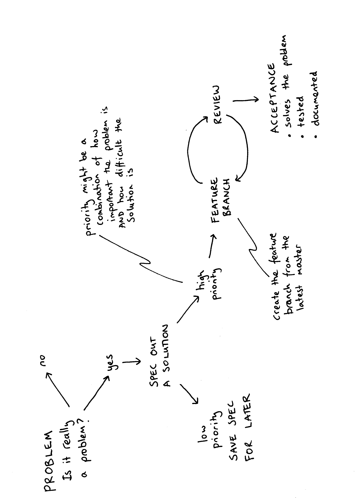

DART flow¶
DART flow is the workflow to go from having an idea for a feature to getting the feature into the DART code, so your feature can be used do science.
{kind=link}
Create an issue. Describe the problem you are trying to fix. Currently we are using Github for issue tracking.
Add a label to the issue The label helps prioritize the issue. Is it a bug fix, is it a new feature, is it refactoring existing code? Use the label ‘back-burner’ for something that is low priority
Describe your solution in the issue. Give an estimation of how much code this will effect. Will your solution require changing several modules? The writing specifications section of this document gives an example of how to describe your solution.
Get some feedback on your solution, the standup is a good place to ask for volunteers. This is a good time to have an in-person meeting to chat about your spec.
Create a feature branch to use for your solution. Once you are happy with your feature branch, push the branch up to the main DART repo and create a pull request.
Be as helpful to your reviewers as you can. Only include changes relevant to your issue and avoid changes that are not relevant to the particular issue.
Warning
master will be remained to main in the near future
Feature Branch Workflow¶
DART is using a Feature Branch Workflow. “The core idea behind the Feature Branch Workflow is that all feature development should take place in a dedicated branch instead of the master branch. This encapsulation makes it easy for multiple developers to work on a particular feature without disturbing the main codebase.” It also means, ideally, that the master branch will never contain broken code. Atlassian has a nice comparison of the various workflows people use.
Branch naming conventions¶
- master
This is the main branch. It should always work.
- feature-branch
Your feature branch should have a descriptive name which indicates what bug fix or feature the branch contains. For example, a feature branch for adding a flu forecasting model could be called: flu-model.
- gh-pages
This branch is used to serve the website dart.ucar.edu. It only has the website content. To make changes to the website, follow the instructions on https://github.com/NCAR/dart-web
Create your feature branch from the master branch.
git clone https://github.com/NCAR/DART.git
git checkout master
git checkout -b new-feature
where new-feature is the name of your feature branch.
Warning
Try not to name your branch after yourself, e.g barbara-liskov. Pick a name that represents what you are working on, e.g. oop-version-of-filter.
To push your branch up to the main DART repo:
git push -u origin new-feature
Note
The -u flag means your local copy will track the remote repo. It is no big deal if you don’t do it, but it is nice to have git status tell you “your branch is up to date with remote/new_branch_name” or “your branch is 2 commits behind remote/new_branch_name”
Keeping your feature branch up to date with the master¶
As you are working on your feature branch, the master branch may have been updated.
To keep your feature branch up to date with the master:
git checkout master
git pull
git checkout new-feature
git merge master new-feature
Warning
Make sure you have committed any changes to your new-feature branch before updating from the master
Once your feature is ready for review, submit a pull request.
Public development¶
In general, all DART development is public.
Private development¶
When is it ok to use a private repo?
collaborators require a private repo for development.
You want to have content for the DART team only.
If you want to use Github with a private version of the DART repo with your collaborators. You can create a new private repository on Github, for example https://github.com/your-private-repo, and use this new private repo as a remote. Follow the same conventions for feature branch workflow by creating a branch for you and your collaborators to use.
git clone https://github.com/NCAR/DART.git
cd DART
git checkout master
git checkout -b embargoed-feature
git remote add collab https://github.com/your-private-repo
git push -u collab embargoed-feature
In the above example,
- https://github.com/your-private-repo
is the private repository
- embargoed-feature
is the branch where the private development will be done
- collab
is the name of the remote
To list all the remotes you have for a repository, use
git remote -v